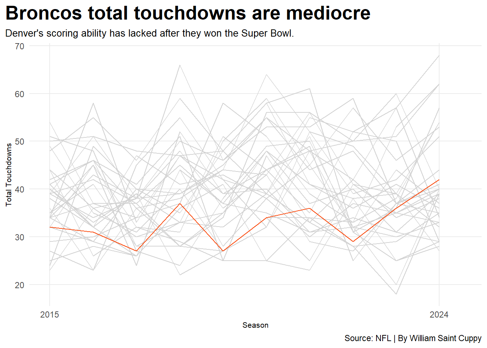
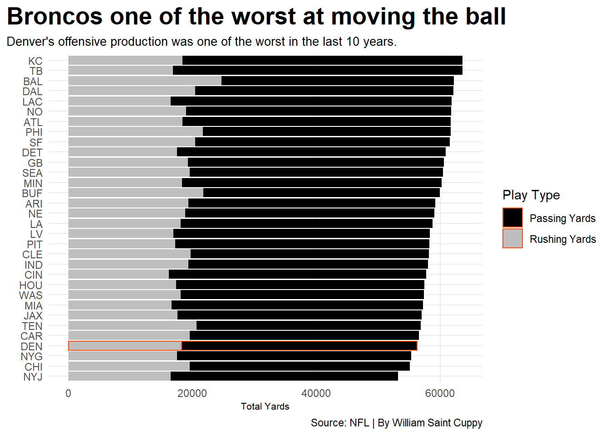
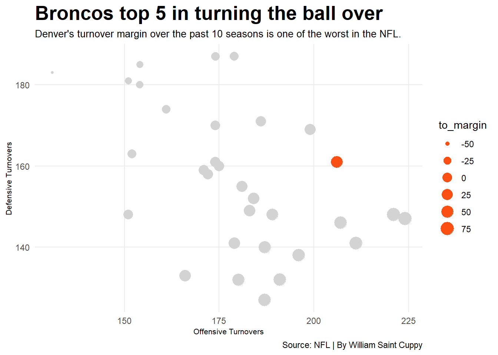

The Denver Broncos went from the highest of highs to quite possibly the lowest of lows almost immediately. Denver has been on a mediocre run since winning the Super Bowl in the 2015-2016 season. Just how bad are the Denver Broncos though, having missed the playoffs until 2024? Was it the offense or the defense that was lacking during their drought? Well their offense has been mediocre to say the least, at least in points production, being mediocre/towards the bottom every year. Well quarterback play did not help with having 14 total starting quarterbacks between 2015-2024. The last 10 years have been rough for Denver fans who watched the offense struggle to score and get in the endzone.
Code
library(tidyverse)library(nflreadr)library(ggrepel)library(patchwork)library(dplyr)season15 <-load_team_stats(seasons =2015, summary_level ="reg")season16 <-load_team_stats(seasons =2016, summary_level ="reg")season17 <-load_team_stats(seasons =2017, summary_level ="reg")season18 <-load_team_stats(seasons =2018, summary_level ="reg")season19 <-load_team_stats(seasons =2019, summary_level ="reg")season20 <-load_team_stats(seasons =2020, summary_level ="reg")season21 <-load_team_stats(seasons =2021, summary_level ="reg")season22 <-load_team_stats(seasons =2022, summary_level ="reg")season23 <-load_team_stats(seasons =2023, summary_level ="reg")season24 <-load_team_stats(seasons =2024, summary_level ="reg")nfl <-bind_rows(season15, season16, season17, season18, season19, season20, season21, season22, season23, season24)nfltds <- nfl |>mutate(total_tds = rushing_tds + passing_tds) db <- nfltds |>filter(team =="DEN") ggplot() +geom_line(data=nfltds, aes(x=season, y=total_tds, group=team), color="lightgrey") +geom_line(data=db, aes(x=season, y=total_tds, group=team), color="#FB4F14") +labs(title ="Broncos total touchdowns are mediocre",subtitle ="Denver's scoring ability has lacked after they won the Super Bowl.",caption ="Source: NFL | By William Saint Cuppy",x="Season",y="Total Touchdowns" ) +scale_x_continuous(breaks =c(2015, 2024),limits =c(2015.0, 2024.5) ) +theme_minimal() +theme(plot.title =element_text(size =20, face ="bold"),axis.title =element_text(size =8), plot.subtitle =element_text(size=10), panel.grid.minor =element_blank(),plot.title.position ="plot" )

Well just because Denver was bad at getting in the endzone doesn’t mean that they couldn’t move the ball though, right? Wrong, Denver was one of the worst teams in total yards from 2015-2024. Denver was bottom 5 in moving the ball being in front of the New York Giants, the Chicago Bears, and the New York Jets. They were one of the worst teams both in the air and on the ground. Denver’s overall offense lacked production, not only in getting in the endzone but also in moving the ball literally anywhere down the field. In not being able to move the ball on the ground nor through the air, hopefully they were able to at least take care of the ball right?
Code
library(tidyverse)library(nflreadr)library(ggrepel)library(patchwork)library(dplyr)season15 <-load_team_stats(seasons =2015, summary_level ="reg")season16 <-load_team_stats(seasons =2016, summary_level ="reg")season17 <-load_team_stats(seasons =2017, summary_level ="reg")season18 <-load_team_stats(seasons =2018, summary_level ="reg")season19 <-load_team_stats(seasons =2019, summary_level ="reg")season20 <-load_team_stats(seasons =2020, summary_level ="reg")season21 <-load_team_stats(seasons =2021, summary_level ="reg")season22 <-load_team_stats(seasons =2022, summary_level ="reg")season23 <-load_team_stats(seasons =2023, summary_level ="reg")season24 <-load_team_stats(seasons =2024, summary_level ="reg")nfl <-bind_rows(season15, season16, season17, season18, season19, season20, season21, season22, season23, season24)nflyds <- nfl |>group_by(team) |>summarize(total_rushing =sum(rushing_yards), total_passing =sum(passing_yards)) nfllong <- nflyds |>pivot_longer(cols=starts_with("total"), names_to="type", values_to="yards")db <- nfllong |>filter(team =="DEN")ggplot() +geom_bar(data=nfllong, aes(x=reorder(team, yards),weight=yards,fill=type)) +scale_fill_manual(values =c("black", "grey"), name="Play Type", labels =c("Passing Yards", "Rushing Yards")) +geom_bar(data=db, aes(x=team,weight=yards,fill=type),color="#FB4F14") +coord_flip() +labs(title ="Broncos one of the worst at moving the ball",subtitle ="Denver's offensive production was one of the worst in the last 10 years. ",caption ="Source: NFL | By William Saint Cuppy",x="",y="Total Yards" ) +theme_minimal() +theme(plot.title =element_text(size =20, face ="bold"),axis.title =element_text(size =8), plot.subtitle =element_text(size=10), panel.grid.minor =element_blank(),plot.title.position ="plot" )

Wrong again, Denver was top 5 in total turnovers in the 10 years span between 2015-2024. There is some positive though, Denver’s defense was above average when it came to forcing turnovers, putting them in the top 15 in the NFL. Denver’s defense still couldn’t balance out the turnover margin though, with the offense coughing up the ball more than the majority of the NFL. Though the defense held their own and forced turnovers, the offense was so bad that the defense could not balance out the margin.
Code
library(tidyverse)library(nflreadr)library(ggrepel)library(patchwork)library(dplyr)season15 <-load_team_stats(seasons =2015, summary_level ="reg")season16 <-load_team_stats(seasons =2016, summary_level ="reg")season17 <-load_team_stats(seasons =2017, summary_level ="reg") season18 <-load_team_stats(seasons =2018, summary_level ="reg") season19 <-load_team_stats(seasons =2019, summary_level ="reg") season20 <-load_team_stats(seasons =2020, summary_level ="reg")season21 <-load_team_stats(seasons =2021, summary_level ="reg")season22 <-load_team_stats(seasons =2022, summary_level ="reg")season23 <-load_team_stats(seasons =2023, summary_level ="reg")season24 <-load_team_stats(seasons =2024, summary_level ="reg")nfl <-bind_rows(season15, season16, season17, season18, season19, season20, season21, season22, season23, season24)nflto <- nfl |>group_by(team) |>mutate(total_to =sum(passing_interceptions) +sum(rushing_fumbles_lost) +sum(receiving_fumbles_lost),def_to =sum(def_interceptions) +sum(def_fumbles)) |>mutate(to_margin = total_to - def_to)db <- nflto |>filter(team =="DEN")ggplot() +geom_point(data=nflto, aes(x=total_to, y=def_to,size=to_margin), color ="lightgrey") +geom_point(data=db, aes(x=total_to, y=def_to,size=to_margin), color ="#FB4F14")+labs(title ="Broncos top 5 in turning the ball over",subtitle ="Denver's turnover margin over the past 10 seasons is one of the worst in the NFL.",caption ="Source: NFL | By William Saint Cuppy",x="Offensive Turnovers",y="Defensive Turnovers" ) +theme_minimal() +theme(plot.title =element_text(size =20, face ="bold"),axis.title =element_text(size =8), plot.subtitle =element_text(size=10), panel.grid.minor =element_blank() )

The Denver Broncos quite literally went from the highest of highs in winning the Super Bowl, to the lowest of lows in having one of the worst offenses in the NFL and suffered a 10 year drought missing the playoffs. The defense stayed strong through those 10 years, but the offense could not produce any movement nor make their way into the endzone.